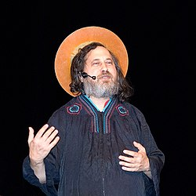

Welcome!

Hello! I'm Julia, also known as cakeforcat. I'm a Silicon Design Engineer by day and a hacker by night. I do electronics, rocketry, digital design, and probably more. Here's an unordered, non-exhaustive list of some of my special interests:
- Trains, public transport and sustainable urban design
- NixOS
- Typst
- Gender and queer theory
- Electronics of various kinds
- Open source hardware and software
- Space exploration and rocketry
- Mexican food
- The semiconductor industry
This is my personal website where I share my thoughts, projects, and various other miscellaneous stuff.
Proudly javascript free, gotta make daddy Stallman happy. 